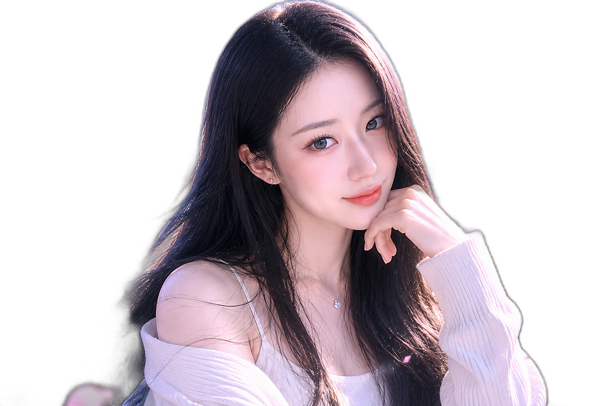

방송홈(ENDOLPHIN) 히어로 — 사진 적용 시안
실제 사이트는 그대로예요. 아래 3가지 중 마음에 드는 걸 골라주세요. (테란 배경은 크롭/오버레이로 가렸어요)
시안 1 · 오른쪽 둥근 사진 + 왼쪽 글자 (깔끔·추천)
ENDOLPHIN
엔돌핀의
방송 공간
종합 라이브 방송 — SOOP에서 만나요 ♥

시안 2 · 사진을 배경으로 꽉 차게 (임팩트)
ENDOLPHIN
엔돌핀의
방송 공간
종합 라이브 방송 — SOOP에서 만나요 ♥
시안 3 · 원형 사진 (얼굴만 강조)
ENDOLPHIN
엔돌핀의 방송 공간
종합 라이브 방송 — SOOP에서 만나요 ♥
→ 마음에 드는 시안 번호(1·2·3)를 말씀해 주시면 실제 방송홈에 적용할게요.
더 깔끔하게 배경을 완전히 지우고 싶으면 "누끼"라고 해주세요(도구 설치 후 진행).